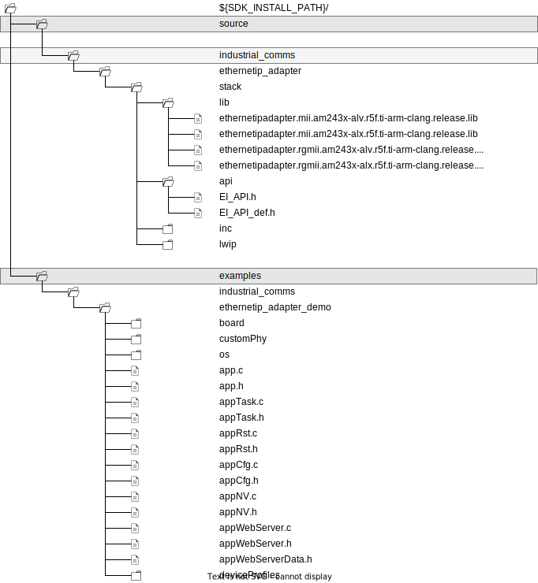
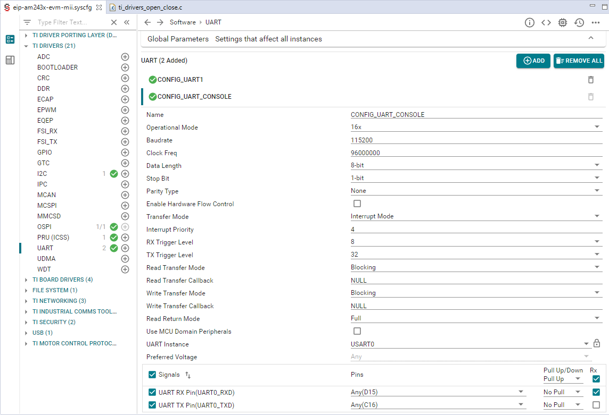

EtherNet/IP™ Adapter3.04.02 |
 |

|
EtherNet/IP™ Adapter3.04.02 |
|
|
This section discusses example applications that are shipped as part of the EtherNet/IP Adapter SDK. The directory structures below describe the location of all libraries and example source files required to build EtherNet/IP Adapter examples applications for different profiles as specfied in Chaper 6 Device Profiles of THE CIP NETWORKS LIBRARY – Volume 1.
The example applications are build from a set of C source and header files the are common for all different device profiles and code files that contain the actual device profile specific functionality such as particular objects, instance, attributes, and assemblies.
This structure can be extended with further device profiles examples over the time.
It is also suggested that device manufacturers integrate their specific implementations into this structure, if possible.

The parts of the examples applications that are common for all profiles are implemented in the C code files, and their corresponding header files, listed below:
deviceProfiles/genericDevice/app_generic_device.c main() is implemented in app.c. Its scope is the initialitzation the Texas Instruments driver porting layer (DPL), the selection of the PRU-ICSS instance, PHY devices, and the configuration of task priorities. After this initial setup, a task is constructed executing EI_APP_mainTask() that implements the CIP and EtherNet/IP functionality. CMN_APP_mainCreate() is implemented in CMN_app.c and uses the TaskP_construct() from the Task API of the DPL.

EI_APP_mainTask() is implemented in appTask.c. It initializes and opens all peripheral drivers, depending on the SysConfig settings for the project. To enable UART console output, verify that your SysConfig settings are as follows:

These settings result in the following code in ti_drivers_open_close.c including the declaration of the handle gUartHandle that is later used in the example code to access the UART.
In EI_APP_maintTask() CUST_DRIVERS_init() is called to initialize different drivers such as QSPI, I2C, and UART. Depending on the defintion of PRINTF_CALLBACK_FUNCTION in board.h CUST_DRIVERS_init() registers a callback function for UART output calling OSAL_registerPrintOut(). In the callback function strings are then written to the console output by calling UART_write from the Texas Instruments driver library:
board.h
CUST_drivers.C
CUST_drivers.c

Following the driver initialitzation, a set of functions that implement CIP device profile or vendor-specific functionality is registered, see deviceProfiles/app_device_profile.c.
The final EtherNet/IP adapter is created and initialized in EI_APP_TASK_init() which is also located in appTask.c. Note that here only default objects and instances are created:
| Attribute ID | Name | Data Type | Value |
|---|---|---|---|
| 1 | Revision | UINT | 2 |
| Attribute ID | Name | Data Type | Value |
|---|---|---|---|
| 1 | Vendor ID | UINT | Default: 806 [0x0326] |
| 2 | Device Type | UINT | Default: depending on particular example |
| 3 | Product Code | UINT | Default: depending on particular example |
| 4 | Revision | UDINT | Default: depending on particular example |
| 5 | Status | WORD | |
| 6 | Serial Number | UDINT | |
| 7 | Product Name | SHORT_STRING | Default: depending on particular example |
| Attribute ID | Name | Data Type | Value |
|---|---|---|---|
| 1 | Revision | UINT | 1 |
| Attribute ID | Name | Data Type | Value |
|---|---|---|---|
| 1 | Revision | UINT | 1 |
| Attribute ID | Name | Data Type | Value |
|---|---|---|---|
| 1 | Revision | UINT | 4 |
| Attribute ID | Name | Data Type | Value |
|---|---|---|---|
| 1 | PTPEnable | BOOL | |
| 2 | IsSynchronized | BOOL | |
| 3 | SystemTimeMicroseconds | UTIME | |
| 4 | SystemTimeNanoseconds | STIME | |
| 5 | OffsetFromMaster | NTIME | |
| 6 | MaxOffsetFromMaster | ULINT | |
| 7 | MeanPathDelayToMaster | NTIME | |
| 8 | GrandMasterClockInfo | STRUCT | |
| 9 | ParentClockInfo | STRUCT | |
| 10 | LocalClockInfo | STRUCT | |
| 11 | NumberOfPorts | UINT | |
| 12 | PortStateInfo | STRUCT | |
| 13 | PortEnableCfg | STRUCT | |
| 14 | PortLogAnnounceIntervalCfg | STRUCT | |
| 15 | PortLogSyncIntervalCfg | STRUCT | |
| 16 | Priority1 | USINT | |
| 17 | Priority2 | USINT | |
| 18 | DomainNumber | USINT | |
| 19 | ClockType | WORD | |
| 20 | ManufactureIdentity | USINT[4] | |
| 21 | ProductDescription | STRUCT | |
| 22 | RevisionData | STRUCT | |
| 23 | UserDescription | STRUCT | |
| 24 | PortProfileIdentityInfo | STRUCT | |
| 25 | PortPhysicalAddressInfo | STRUCT | |
| 26 | PortProtocolAddressInfo | STRUCT | |
| 27 | StepsRemoved | UINT | |
| 28 | SystemTimeAndOffset | STRUCT |
TIME_SYNC is defined in the list of predefined symbols of the main example project in Code Composer Studio (Properties → Build → Arm Compiler → Pedefined Symbols).| Attribute ID | Name | Data Type | Value |
|---|---|---|---|
| 1 | Revision | UINT | 3 |
| Attribute ID | Name | Data Type | Value |
|---|---|---|---|
| 1 | Network Topology | USINT | |
| 2 | Network Status | USINT | |
| 10 | Active Supervisor Address | STRUCT | |
| 12 | Capability Flags | DWORD | 0x82 (Beacon-based Ring Node, Flush_Table frame Capable) |
| Attribute ID | Name | Data Type | Value |
|---|---|---|---|
| 1 | Revision | UINT | 1 |
| Attribute ID | Name | Data Type | Value |
|---|---|---|---|
| 2 | DSCP PTP Event | USINT | Default: 59 ('111011') |
| 3 | DSCP PTP General | USINT | Default: 47 ('101111') |
| 4 | DSCP Urgent | USINT | Default: 55 ('110111') |
| 5 | DSCP Scheduled | USINT | Default: 47 ('101111') |
| 6 | DSCP High | USINT | Default: 43 ('101011') |
| 7 | DSCP Low | USINT | Default: 31 ('011111') |
| 8 | DSCP Explicit | USINT | Default: 27 ('011011') |
| Attribute ID | Name | Data Type | Value |
|---|---|---|---|
| 1 | Revision | UINT | 2 |
| Attribute ID | Name | Data Type | Value |
|---|---|---|---|
| 1 | Status | DWORD | Default: BOOTP/DHCP/NVS |
| 2 | Configuration Capability | DWORD | Default: 0x00000095 (BOOTP Client, DHCP Client, Configuration Settable, ACD Capable) |
| 3 | Configuration Control | DWORD | Default: 0x00000000 (Configuration Method: Static IP) |
| 4 | Physical Link Object | STRUCT | |
| 5 | Interface Configuration | STRUCT | Default IP Address: 192.168.1.10 Network Mask: 255.255.255.0 Gateway Address: 192.168.1.1 Name Server: 0.0.0.0 Name Server 2: 0.0.0.0 Domain Name:ü |
| 6 | Host Name | STRING | Default: |
| 8 | TTL Value | USINT | Default: 1 |
| 9 | Mcast Config | STRUCT | Default Num Mcast: 32 Mcast Start Addr: 239.192.2.32 |
| 10 | SelectAcd | BOOL | Default: 1 |
| 11 | LastConflictDetected | STRUCT | |
| 12 | EtherNet/IP QuickConnect | BOOL | Default: 0 |
| 13 | Encapsulation Inactivity Timeout | UINT | Default: 120 |
| Attribute ID | Name | Data Type | Value |
|---|---|---|---|
| 1 | Revision | UINT | 4 |
| 2 | Max Instance | UINT | 2 |
| 3 | Number of Instances | UINT | 2 |
| Attribute ID | Name | Data Type | Value |
|---|---|---|---|
| 1 | Interface Speed | UDINT | Default: |
| 2 | Interface Flags | DWORD | Default: |
| 3 | Physical Address | USINT[6] | |
| 4 | Interface Counters | STRUCT | |
| 5 | Media Counters | STRUCT | Allways 0 |
| 6 | Interface Control | STRUCT | |
| 7 | Interface Type | USINT | Default: Twisted-pair |
| 8 | Interface State | USINT | Default: |
| 9 | Admin State | USINT | Default: enable |
| 10 | Interface Label | SHORT_STRING | Default: Port 1|2 |
| 11 | Interface Capability | STRUCT | Default: Port 1|2 |

At the time of release, code examples are provided for a CIP Generic Device (Device Type 0x2B) and a CIP General Purpose Discrete I/O Device (Device Type: 0x07) according to Volume 1 Chapter 6 of the CIP NETWORKS LIBRARY.
The file structure below the deviceProfiles subdirectory is shown in the diagram below.

The Generic Device profile does not specify any instances of the Assembly Object or the type of application objects necessary for device operation. This portion of the device profile must be supplied by the product developer and in this example focuses on digital I/O functionality via an LED array available on the evaluation board. The Generic Device example does not cover CIP Sync functionality.
See Generic Device (Device Type: 0x2B) for details.
A General Purpose Discrete I/O device type interfaces to multiple discrete I/O device types that do not have network capabilities. Examples include sensors and actuators. The example provided with the EtherNet/IP adapter SDK implements a Discrete Input Point Object (Class Code: 0x08), a Discrete Output Point Object (Class Code: 0x09), with two instances each and a simple example of a Configuration Assembly for the Discrete Output Point Object.
See General Purpose Discrete I/O Device (Device Type: 0x07) for details.
The EtherNet/IP stack contains an example how to implement a small HTTP server application. The corresonding code can be found in the files appWebServer.c, appWebServer.h, and appWebServerData.h. The HTML definitions for the page layout are contained in appWebServerData.h.
The web server and the corresponding background task are enabled by setting CPU_LOAD_MONITOR == 1 (default: CPU_LOAD_MONITOR == 0) in the list of predefined symbols of the main example project in Code Composer Studio (Properties → Build → Arm Compiler → Pedefined Symbols).
To reach the example web page enter the IP address of the EtherNet/IP Adapter device (default: 192.168.1.10) into a web browser.
 1.9.7
1.9.7